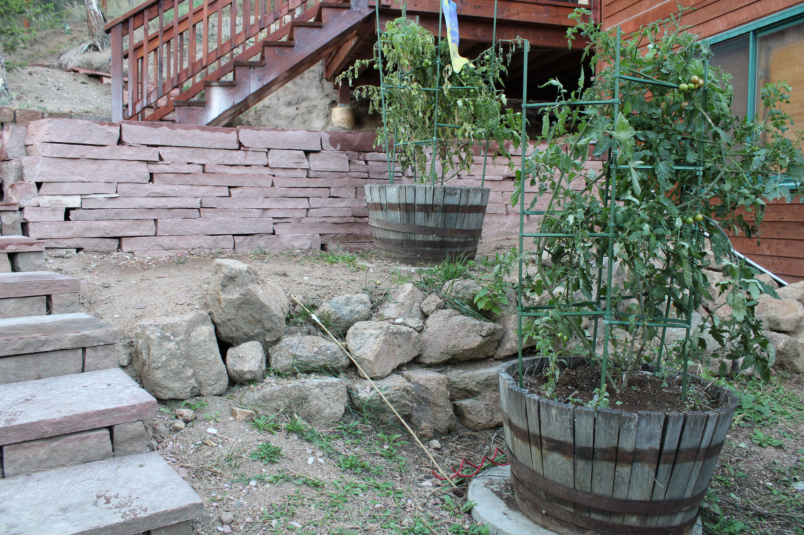
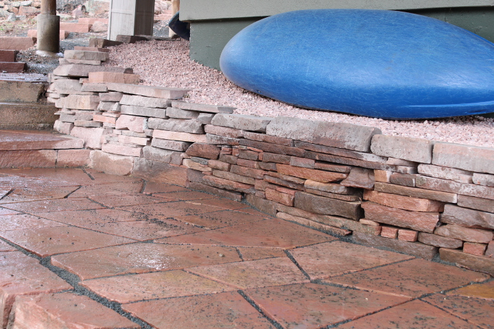
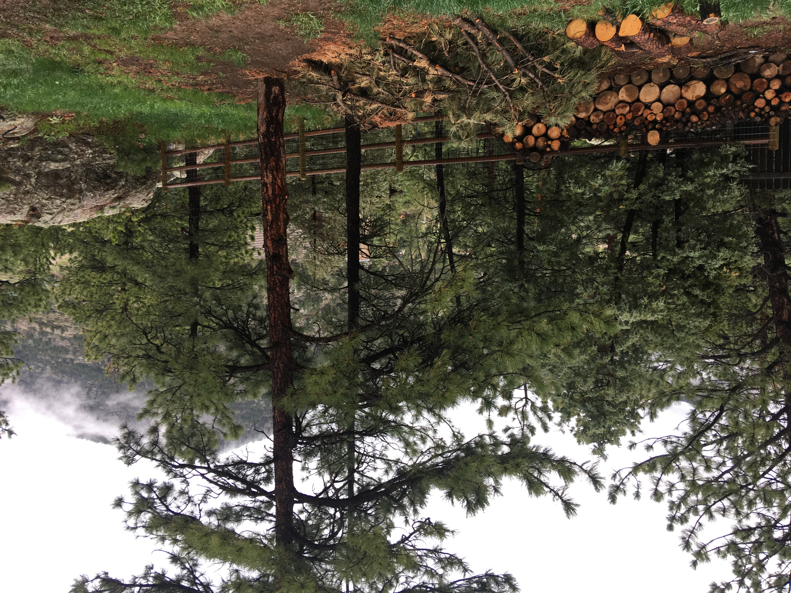

{kind=link}
{kind=link}
{kind=link}
{kind=link}
{kind=link}
{kind=link}
{kind=link}
{kind=link}
{kind=link}
{kind=link}
{kind=link}
{kind=link}
{kind=link}
{kind=link}


{kind=link}


I enjoy working with stone. I’ve invested a lot of time and energy into learning the craft and I’d like to share my perspective. This is by no means a complete how to guide, I plan to refine it in subsequent additions as my skill as a writer improves.
This is a basic introduction to the core concepts that I think are most important. Some of the information may not be relevant depending on your location. I work with sandstone because we have an abundance of it in Colorado. I’m sure that techniques and building methods vary greatly across the nation and the world.
Hardscaping demands mental and physical endurance. There are no shortcuts. If you half-ass one step you’ll work twice as hard on the next. This is the most important lesson. If you take nothing else from this, remember - no short cuts.
I only cover hardscaping here. I won’t be discussing landscaping, working with mortar, project estimates, material estimates, managing finances, working with sub contractors, hiring employees or meeting with clients. For all things concrete I suggest subscribing to “Mason the Mason” on youtube and browse the playlist section.
I’m writing this with the assumption that you have at least some experience with physical fitness and working with your hands. In order to include everything that I deem important, some sections may be covered broadly with suggestions for other resources.
Consider the reasons behind what you’re doing. Money is important but if your only goal is money you'll burn out quickly. There’s a reason why many blue collar workmen are alcoholics. If stonework is your aspiration consider all the benefits that come with a physical career. Be single minded. Act as if you were going to battle. Warriors don’t underestimate the enemy, powerlifters and strongmen don’t underestimate the weight. Respect is necessary but the singular goal of these men is domination. This is the appropriate attitude to have toward the stone, healthy respect but not so much that you fear it. Expect to earn a few scars. Your creations will look better as you gain strength and mental fortitude. Once the physical challenge is secondary your mind will be free to think creatively.
Clothing is important. My strong recommendation is to wear only cotton or linen in the summer, no poly blends unless you want to suvie yourself. Thin, loose fitting button down shirts let the breeze in. Some of my favorite shirts have been threadbare Van Heusens from the thrift store. Currently my favorite brand is Noble Outfitters. Collared long sleeves are better than sunscreen, they protect you all day and won’t clog your pores. Wear pants that you can move in. You want to be able to squat ass-to-grass without resistance. Cargo jeans are good, extra pockets and hammer loops can be useful. Always keep extra socks in the truck.
Gloves can be necessary depending on the season. I suggest growing calluses but that takes longer than burning yourself on a hot stone. The most durable type I’ve found are belay gloves by Metolius. They're affordable, breathable in the summer and insulating in the winter. Black Diamond sells a belay gloves that are nearly identical, they don’t fit me as well but your mileage may vary. You expect to go through one or two pairs a season or more depending on how frequently you wear them.
Another good option for cold weather is to buy a pack of woven cotton gloves and use them like hand socks. Put the cotton glove on first while you’re in the hardware store then put a mason glove over it, generally one size larger. Mason gloves are synthetic woven gloves designed to protect your hands from mortar. The palm side and finger tips are dipped in nitrile or polyurethane. The double glove technique keeps your hands warm and dry in cold weather and if they do get damp just change your “socks”.
Use of safety glasses, respirators and earplugs should go without saying but here it is. My preferred brand is 3M. I like the silicone earplugs that come on a string because they’re hard to lose and easy to clean. Foam plugs get dirty quick, not good. My preferred “safety glasses” have historically been prescription glasses. This is dumb and reckless. Don’t blame me if you try it and end up picking flakes of stone out off of your cornea or rushing to a spigot with an eye full of mortar.
I was mixing mortar once and got a big dollop in my eye, it arched over my prescription glasses and hit dead center. This was not only excruciating because of the grit but the chemicals also caused my eye to swell. It was dry and extremely sensitive for the rest of the day and all night. My vision was blurry for a while after it happened. I’m lucky it didn’t cause permanent damage.
Respirator filters should be changed frequently. If you’re struggling to breathe through a respirator it needs new filters. DO NOT cut stone or mix concrete without a respirator. Silica (a mineral found in all stone) is toxic. Stone dust and concrete are fine powders that get stuck in your lungs. Masonry is on the top 25 most dangerous jobs list (death and chronic illness from exposure). For comparison, police officer doesn’t even make the list.
Shoes that cover the ankle are strongly recommended. You don’t want to take a digging bar square on the ankle bone. I’m not a steel toe absolutist but remember that if you don’t wear them you’re taking a risk like driving with no seatbelt. It’s comfortable but one day you might eat the windshield and about 40 feet of asphalt. But you’re grown so it’s your choice.
If you’re not exceptionally coordinated consider starting with work boots. The steel toe can be used as another tool for setting flagstone. My favorite brand is Georgia Boot, they’re waterproof and built like tanks. My pair cost about $150 but that was several years ago. They’re the most durable boot I’ve ever owned.
I have strong opinions about footwear. When I started my choice was steel toe cowboy boots because they’re easy to slip off at the end of the day. After a few months I developed a bump on the back of my heel from constant rubbing, this was not ideal but it didn’t cause me pain. After about a year I was experiencing significant pain in my knees. I was an avid powerlifter at the time so the obvious conclusion would be over use. This was likely a contributing factor but not the whole story.
Please note: the following is personal experience and not medical advice.
Modern shoes don't just mutilate our feet, they atrophy muscles and shrink tendons. Toes are meant to be spread wide not crammed into a point. Elevated heels shrink tendons, soft insoles and arch support cause muscle atrophy. People who never wear shoes have wide flat feet. If “fallen arches” were a bad thing all of these people would have joint issues and back pain. Repairing the damage to your feet could potentially take years but don’t get all depressed, it is possible.
I started wearing “barefoot” or “zero-drop” shoes to fix my knee issues. They’re designed to fit the shape of the foot and have no cushion or heel like a moccasin. For clarity I will refer to them as “ergonomic” shoes. My favorite brand/ model is the Xero Denver. They cover the ankle and are effectively a four season shoe. Unfortunately they don’t come in steel toe. The first pair I bought were canvas and I patched them with old jeans and shoe goo until they were more patch than shoe. Xero will be making the new Denver model out of leather. As of writing this I’m on their email list waiting for production to start.
Side note on insoles: my preference is custom insoles because they last longer. I remove the stock insoles and use them as a template to cut my own out of 8th inch leather. A friend gifted me a pair that he made with two layers of pig leather and wool sandwiched in the middle. They’re ideal for winter and actually keep my feet warm, not just less cold. During summer I prefer solid leather because it absorbs less moisture and drys faster.
I’ve heard that switching to ergonomic shoes can exacerbate pre-existing issues so proceed with caution and listen to your body. Don’t push yourself if you experience pain. Check in with your back, hips, knees and ankles frequently. Some people need time to acclimate so they wear ergonomic shoes during a workout or a walk then switch back to their every day shoes. Walking and lifting barefoot helps with proprioception.
You’ll have to learn how to walk again. Literally. Modern shoes are cushioned so we get used to slamming our heel into the pavement. Try this with ergonomic shoes and the consequences are immediate. It doesn’t take long to adjust your stride, you’ll be gliding like a panther in no time. What does take time is the gradual transformation of your feet, this is the biggest hurdle. If you stick with ergonomic shoes for long enough you’ll notice that your toes will start to spread out and your feet will become wider.
Make time to massage your feet and ankles, become familiar with all the little muscles and tendons. Massage gently between the bones, spread your toes and stretch briefly in the morning and after workouts. Do not become a habitual stretcher. Never stretch before lifting heavy but always perform a thorough warm up with light weight first.
I wear ergonomic shoes almost exclusively. The only time I wear boots is if it’s raining hard, very muddy or there’s lots of snow on the ground. If I wear boots for weeks at a time my knees start to hurt again. I believe the reduction in movement and raised heel are both contributing factors. I attempted to mitigate this by filing down the heels. This must be done with caution because if one heel is shorter than the other you could cause yourself back and hip problems.
Sun delirium is real. Drink a liter of water minimum before you leave the house and bring a gallon to the job site. Always keep salt with you and something with natural sugar like fruit or honey. Avoid processed sugar and energy drinks, you don’t want to crash. Sports drinks are overpriced sugar water contaminated with microplastics. Take a pinch of salt and a gulp of honey with your water or mix yourself a lemonade with salt. Hydrate before you experience fatigue, headache, brain fog or confusion. 32oz bottles of Ambrosia honey can be purchased online for 15 dollars. Buy salt from the earth, all sea salts are contaminated. Yes, earth salts contain heavy metals. In my opinion it’s the lesser evil compared to microplastics and radiation.
I want to emphasize this point - drink a liter of water minimum before leaving the house. Drink it first thing in the morning and wait 20 minutes then drink your coffee. Carry water in your stomach not your canteen. This is old world wisdom that I learned from the book “Outdoor Survival Skills” by Larry Dean Olsen. If you neglect to hydrate properly you’ll be playing catch up all day and go home with a splitting headache.
I’m no stranger to the dirty bulk but try to eat well. If all you can get is eight Whopper Jr’s then by all means chow down but it’s better to think ahead and pack a few lunches. Some of my favorite high calorie snacks are sunflower seeds (shelled and roasted), pitted dates, baked corn tortillas, home made beef jerky and frozen mango chunks with salt and lime juice.
Strength and endurance are important because the chance of injury caused by negligence increases as you become fatigued. Take time to learn how to train. Hire a personal trainer if you can, if not I recommend reading “The Westside Barbell Book of Methods” by Louie Simmons and “Solitary Fitness” by Charlie Bronson. Take what’s relevant to you and make it part of your daily life.
There is no excuse for weakness. If you neglect strength training you will get hurt eventually and you’ll be physically and psychologically exhausted every day. In my opinion the absolute minimum strength level you should have is 10 strict, wide grip pullups, 20 shoulder width pushups (elbows in, not flared) and 50 bodyweight squats. If you have access to a barbell you should be able to deadlift twice your body weight with good form and no belt on any day of the week.
Endurance is equally important. You may get lucky and the terrain will be flat enough to load a wheelbarrow and dolly. When this isn’t possible you’ll be carrying stone by hand and gravel in buckets. One five gallon bucket full of gravel weighs about 60 pounds. You’ll fill two at a time and walk them from the staging area to your project. During these grind days you’ll need the ability to shift into four-low so to speak and go until it’s time to stop. Moving two tons of gravel in 60 to 90 minutes shouldn’t be a problem. You should be able to unload a whole palate of stone without stopping.
Patios look better with big slabs of flagstone. The stronger you are the better your work will be. Don’t be tempted to buy inch thick flagstone, the slabs will break while setting and they will make for an inferior patio that won’t last. Two inches thick is the minimum for a patio to set well. Vertical palates have larger flagstone than horizontally stacked palates. Stacked flagstone breaks more often during transportation. Use caution while unloading a vertical palates. Never trust the wooden frame, always have it staged somewhere out of the way. I’ve never had a palate frame break on me but that doesn’t mean it couldn’t happen.
Again, nothing I’ve written should be taken as medical advice. This is my personal experience which does not, and could not account for every single person. Every individual is responsible for knowing their own body. I could never know you as well as you know yourself.
You must recover. If you don’t rest and recover you will develop an overuse injury or worse. Think about the daily life of a lion for a moment. You’ll never see a lion stretching all day but they’re always ready to sprint. In the blink of an eye the lion goes from rest mode to overdrive to catch his dinner. There is no stop watch, no breaks between sets. He runs until he eats or goes hungry. Cats stretch briefly in the morning or after a nap, this is enough. Over stretching primes the body for injury. The only thing that yoga is good for is doing more yoga, and maybe meeting some crystal girls with a lot of silly ideas bouncing around their heads. Which is fine if that’s what you’re into.
After a successful chase, the lion gorges himself until he falls asleep. It’s okay if you don’t keep a strict eating schedule as long as you’re staying hydrated. Part of hydration is sodium and glucose which is why you should always keep honey and salt on hand. When at work be hungry for a little while then eat and stop before you get full. Digesting food takes water and energy. Overeating before work will cause fatigue, being chronically underfed will also cause fatigue. This can be challenging to regulate but you’ll figure it out eventually. Don’t overthink, just listen to your body.
Lions sleep. All cats sleep, a lot. Don’t be surprised if you want to sleep for nine or ten hours sometimes. This is normal. When I was recovering from a significant illness there were weeks that I slept between nine and twelve hours a night. Don’t shame yourself for it and don’t make yourself wake up when you want to sleep. That being said, be responsible and go to sleep on time or early if you’re tired.
Guys who never get a full nights sleep end up half crippled. If you’re a thickboy and think for a SECOND that there’s a sliver of a chance you have sleep apnea, get it fixed immediately. You WILL die of a stroke or heart attack or a brain aneurysm. If your neck is over 20 inches in circumference or you snore or benching is your favorite exercise there’s a high probability that you suffer from sleep apnea.
Don’t let any massage therapist tell you that your muscles are too dense. Muscles become dense and hard when you lift heavy, it doesn’t mean there’s something wrong with you. Massage therapists are used to kneading doughy slug people so they think it’s normal to be soft. If you hear a little snap crackle pop in your muscle tissue that’s normal too. Hard massage is good but don’t go too hard for too long.
If you feel pain in your muscles that’s sharper than usual pay more attention to that area, especially if there’s any swelling. Massage the area gently and more frequently. This is the time to stretch more but still don’t over do it, focus on movement and mobility. If the swollen area is discolored or very tender when you press down on it with moderate force or it gets worse over a few hours or a day it’s time to see a doctor.
If you drink alcohol or smoke weed or do pills or kratom or research chemicals or whatever other dumb shit people are forgetting their problems with these days, stop reading this immediately and do something else. Go coom or chat on Discord and Reddit until you decide to be trans. This is not for you. You probably don’t even realize that you’re not actually sleeping and you will end up dead or half dead or crippled or addicted by the time you’re 50. This world does not need more weak old men. We need strong old men with old man strength and wisdom. No more geriatric toddlers.
I’ll cover the bare minimum here. Start with the basics and buy more when you need it. I suggest avoiding wooden handles because they splinter and break. Avoid soft rubber grips, they degrade quickly. If you need more padding wear gloves.
Square Shovel
Spade Shovel
Bow Rake
Digging Bar (aka Rock Bar) - 12 lbs, one side is chisel shaped and the other side is a flat disk which is useful for tamping
Outdoor Broom - stiff bristles
Tamper - 8 or 10 in
Sledge Hammer - 2 or 3 lb (preference is Estwing 3lb)
Heavy Flat Head Mason Chisel - square point, 2 in
Medium Flat Head Mason Chisel - triangle point, 1 in
Pointed Mason Chisel (looks like a pencil)
Garden Pick (looks like a pick axe with a fork on one side for pulling weeds)
53 oz Dead-blow Hammer (preference is Estwing)
Bench Broom (HDX is fine - Home Depot generic brand)
Pointing Trowel (medium or large depending on your forearm strength)
Flat Pry Bar (hand-held)
Five Gallon Buckets - nine minimum (one for tools, eight for gravel and dirt)
Dolly with Solid Rubber Wheels
Wheel Barrow and Tire Inflater (you should have a tire inflater for your truck anyway)
Grinder with Sanding Wheel - 80 grit (for sharpening chisels, shovels and rock bar)
Two Stroke Chop Saw with 14 in Blade, One Gallon Gas Can, 50:1 Engine Oil
Saw Maintenance Equipment - Filters (for dust and fuel) Spark Plug, Feeler Gauges, O rings (for hose attachment)
30 ft Tape
100 ft Tape
Mason Line (braided not twisted)
Chalk Line with Blue Chalk (look for one with a thick line)
Line Levels (3 minimum)
Stakes (rebar or something straight and metal)
Eight ft Level
Four ft Level
Two ft Level
Six in Level
Tough Hose (Gorilla brand is good)
Coupler - hose to chop saw (buy two in case one breaks)
Garden Hose Nozzle (with mist setting)
Bucket Caddy (tool organizer)
Pocket Knife
Tin Snips (for cutting metal palate binders)
Duct Tape (bucket handle repair)
Construction Spray Paint
Wire Brush
Chisels should be honed regularly. They don’t need to be razor sharp but they should have an angular point. Don’t let chisel tips get rounded. Shovels get deformed, especially the square one. They work much better if you take the time to shape and hone them occasionally. I keep my shovels machete sharp. The rock bar should be about as sharp as an axe.
The chop saw blade will let you know that it’s dead when it stops cutting and spits out a ton of sparks. Keep an extra one on hand so you don’t have to make a trip to the hardware store. Some are more expensive than others and prices fluctuate so shop around. The Makita Diamond blade from Home Depot and The Hercules diamond blade from Harbor Freight are both very good.
Make sure you know the proper starting procedure for your saw. If it won’t start make sure it didn’t run out of gas first then check the air filter. If it’s dusty you can get away with tapping some of the dust off but if you want to be extra careful just replace it. Never use compressed air to clean a filter. If that didn’t solve the problem check to see if the spark plug came loose. If the spark plug is tight but the saw won’t start then replace the spark plug. The gap on a new spark plug may need to be adjusted, that’s what the feeler gauges are for. Fuel filters and spark plugs should be changed regularly, check the saw manual for maintenance information.
You might want a lock box too. I keep my truck toolbox on site because its easy to move. I can chain it to a tree and it keeps all my tools dry and organized. They're cheaper and lighter than job site boxes.
Make sure your wheelbarrow tire is inflated.
Visualize the end result before starting. The first step of any project is to stare at the land you plan to transform. Consider your options. What do you want to create? How will you get there? Walk through every step of the project in your minds eye as if you were walking through your childhood home. Or somewhere more peaceful if you prefer. Imagine yourself performing every step of the project from start to completion. This creates a sense of certainty so you don’t get lost or overwhelmed half way through.
Measure the area. Take detailed notes and photos from every angle. If it’s helpful draw a simple diagram of the property while you’re there. Patios are straight forward, measure the length and width. Measure diagonally (from corner to corner) to create a perfect square or rectangle. Both diagonal measurements should be equal. Think about how you’ll need to trench, you’ll be digging six inches down to accommodate a four inch gravel foundation and two inch flagstone. The whole trench needs to be level or you’ll struggle later.
Taking measurements for walls is similar, remember to account for depth. Walls that measure up to five feet tall need to be started one or two feet below ground level depending on the density of the earth. If it’s sand and gravel you won’t need to dig as deep compared to soft, dark soil. You might run into bedrock, in this case you’ll have to dig wide enough to fit your saw into the trench then cut and chisel away at it until it’s not an obstruction. You could also rent a jack hammer, I've never had to use one.
All trenches need to be level. If the wall runs parallel to a slope, one side will be deeper than the other and one side of the wall will be shorter than the other. For example, your trench could be one foot deep at the bottom of the slope, three feet deep at the top. In this case your wall might be four feet tall at the bottom of the slope and one foot tall at the top. For walls taller than five feet it’s highly recommended to use cinder block, rebar, mortar and build on a concrete footer.
Measuring for steps can be tricky. If you want to make your life easier there’s laser measuring tools available. For now I’ll tell you how to do it old school.
Put a stake down at the highest point.
Tie the mason line to the stake.
Put the line level in the middle of the line.
Walk to the lowest point.
Hold the line up to your eight foot level. Make sure the level is plumb and the line is level.
Mark the level with a crayon and mark the line with a knot or a flag of some sort (tape, plastic, string, whatever).
Measure the line and the level with your tape measure.
Now you have the height and the length (or rise and run).
After taking measurements you’ll go home, crunch the numbers, possibly draw a blueprint or make your design with CAD software and send the work proposal to the client. I won’t be discussing the details here because it’s entirely context dependent.
Detailed instructional videos about measuring can be found on the youtube channel “Essential Craftsman”. You’ll find visual demonstrations on what I’ve covered here. I recommend starting with the video titled “Using String Like a Pro” https://www.youtube.com/watch?v=cv6BdwMe560
The first step is trenching for the foundation. Mark the perimeter with spray paint or stakes if you prefer. Square up the perimeter with some landmark such as the side of the house, the road, a fence or some trees that are close by. The trench should be roughly one square foot wider than the patio. Make sure the trench is level, it should be at least six inches deep - four inches for the gravel and two for the flagstone. If you’re working on a slope you’ll want to build a small retaining wall on the deep side, this makes the project look finished and prevents dirt from eroding onto the patio. Start digging with the spade and finish with the square shovel. The spade is good for penetrating the earth, the square is good for scraping dirt and shaping the perimeter.
The trench doesn’t have to be perfectly level but there should be no slope. Use your eight foot level to verify this from all angles. Another way to measure level is to set stakes and run a line around the perimeter. Put the line level in the middle of the line and adjust as needed. Once the line is level measure from the dirt to your line. Measuring every two or three feet on each side should give you a good idea of how level your trench is around the perimeter. Next run a line diagonally from corner to corner and measure the center of your trench. Dig as needed and scrape away the excess dirt from the center to the perimeter.
Once your trench is flat and root free it’s time to haul gravel. Don’t use river rocks for the foundation, the gravel should be angular. 3/4 inch granite is most common. Buy whatever is cheapest unless the client has a color preference. Remember that you dug your trench one foot wider than the patio dimensions so you’ll have a foot of gravel bordering the patio. Black granite looks nice against red flagstone. Use 3/4 or 1/4 inch gravel, nothing bigger or smaller. Some masons set on sand but this isn’t ideal for hardscaping because sand retains water, this will cause the stone to shift after freeze thaw cycles. Weeds can grow in sand and may sprout through the cracks. Using roadbase should be avoided for the same reasons.
Once the trench is filled take your eight foot level and screed the gravel (run it across the top from one side to the other). It doesn’t need to be perfect because you’ll be walking over it anyway but there should be no slope. Leveling the gravel thoroughly will help you during the setting phase. After screeding and leveling give the foundation a pass with your tamper, it’ll move less under foot.
Don’t overfill the trench. It’s better to have a foundation that’s too low because it’s much easier to add gravel during the setting phase. Removing gravel during the set is more work but adding lots of gravel during the set is also not ideal. If you have to add two or more inches of gravel under each stone during the set you’ll spend more time leveling the patio.
Staging the flagstone next to the foundation or moving it directly from the palate is a matter of personal preference. I usually move it directly from the palate. If a piece doesn’t fit I’ll put it aside until I find a spot for it. Precision is not the goal at this stage. It’s okay if some overlap and others are six inches apart. For example, you could put a flat edged slab over a slab with an angular edge that you plan to cut off.
Puzzle piecing slabs together is largely dependent on how your mind works so I won’t go into great detail about how you’re “supposed” to assemble a patio. You’ll learn from experience what works best for you. I think of assembling patios like a spider building a web. Each web is different and each spider builds a different style of web.
During this phase it’s okay to drop the stone flat on the gravel with some force. This gives saves your lower back from getting fatigued, tests the stone for hairline cracks and gives the foundation an extra tamp. Just remember to watch your toes, take a wide stance and push the stone down as if you we're slamming a deadlift.
Visualize every cut you’ll make as you place the stone. In some cases it may be easier to cut the stone as you piece them together. If two stones fit together naturally leave them as they are. Cuts should be made conservatively and only when necessary. The less you waste the better for your budget and the less you’ll have to haul away. It’s better to cut a stone in half than cut large chunks off the side. If you’re struggling to find a place for an oddly shaped stone, you might have better luck finding two places for both of it’s halves.
Stone should be equally distributed by size. You don’t want to start with all the large stones on one side and finish with all the small stones on the other side. This is not aesthetic. Look into Japanese stonework if you want examples of how to arrange stone properly. Think of the large stones as your center pieces, they should be scattered evenly across the foundation. The medium stones next to the large ones and the small stones fill in the gaps.
I find it easier to work from one side to the other. I look for medium and large stones with one straight edge and place them on the perimeter. Cut edges should never be facing out, always use naturally straight edges to border the patio. If you build a block perimeter the same rule applies, never cut an edge to fit next to a block, always look for naturally straight edges. Cuts should not be fit with natural edges unless the natural edge is exceptionally straight.
Cuts can be made dry or wet (with a hose attached to the saw). Dry cutting creates a lot of dust and wears the blade down faster but you may have to if there’s no spigot close by, if there’s a water restriction or if your client has a well. In this case you must wear a respirator.
There are several ways to mark stone for cuts. You can use a pencil, a chalk line, your chisel or another piece of stone. For beginners I suggest using a pencil because graphite doesn’t wash away as much. Chalk or etched marks will disappear if you cut wet and fade from the whirlwind of the saw blade if you cut dry. This isn’t a big deal once you gain experience because the blade itself is straight and once you make the initial cut, the saw will move straight as long as you’re holding it upright.
Place your four foot level firmly against a stone and mark it or place a cut stone on top of the stone you intend to cut and use it as a straight edge. Don’t attempt to cut curves because the saw blade will bind. Two stroke engines are powerful and if you bind the blade the saw will buck.
If you want curved edges it’s best to use a hammer and chisel but I don’t recommend this because it creates more waste and the shock wave from striking the chisel will damage your joints. I built a hand chiseled patio in the middle of December and despite wearing gloves I still experienced significant pain and tingling in my hands.
To start a cut, pick a spot near the edge of a stone but don’t start at the edge. Press the blade gently into the stone right on top of the mark you made. The saw will attempt to travel forward, resist it until you cut all the way through the stone. Once you make it through, gently guide the saw forward as you hold it upright and follow the mark. Your saw blade should stay in the gravel the entire time you’re cutting. Cut all the way to the end then turn around and finish cutting the side you started from.
You don’t want to start cutting from the edge because it’s much easier to get off course. You'll bind the blade if you attempt to course correct after starting the cut. Even if you don’t bind the blade the cut will look sloppy if you attempt to correct course.
Most of your stones will be four or five sided. Seven or eight sides is fine but generally not practical. You'll end up using triangles too which is fine, they'll be your smaller gap filling stones. Don’t cut points that are under 30 degrees because they frequently break when setting. If the flagstone has a hairline crack it'll break no matter what so look out for them and cut that part off or make your cut parallel to the crack and use both halves.
When assembling stones all the points should come together. If one point is offset from the other it’s difficult to build around. In this case it’s better to cut both points off so you have another flat edge to work from. In other words, try and make the gaps as simple as possible. You don’t want a bunch of zig-zagging gaps unless it’s a stylistic choice and you’re already proficient with cutting and assembling. Think of stonework as a chess game. Try to win with the least moves possible. Less cuts means less waste and less work.
The gaps between stone should be between a half inch and one inch. Any bigger and your work looks sloppy. Any smaller and the crusher fines won’t fit in the gaps. Crusher fines (commonly known as breeze) are stone dust mixed with gravel. It’s used to fill the gaps because it looks nice and prevents weed growth. Overtime it solidifies but lets moisture pass through and won’t crack like mortar.
At this point the patio is cut and assembled but all the stones are lop sided. There is no way to avoid this, you can only minimize it by leveling and tamping the foundation thoroughly.
Before starting you’ll need some extra gravel, maybe 12-24 buckets depending on how well you prepared your foundation. If you have 3/4 inch gravel left over from the foundation use that. If not buy 1/4 inch gravel if it’s available at your local aggregate distributor. 1/4 inch is slightly easier to set on but not so much that it’s worth going out of your way.
Start leveling from the highest point. It’s important to be mindful of where you want to direct water. Patios should slope but not so much that you notice while standing on it. Pick up a stone and lean it against a gravel bucket. Pour some gravel out from another bucket and tamp the area. Set the stone back down and be careful not to pinch your fingers.
To pick up a stone, wedge the pry bar in the gap and pry it up. If you’re wearing steel toe you can set the stone on your boot, this gives you space to get a grip on it. Use the point of the garden pick to lower the stone back into place and be careful not to let it slip. Using the pry bar to lower stones is less effective, picking stones up with the garden pick is less effective. Keep your back straight and your core tight as if you were deadlifting.
Check the level of the stone you just set with the two foot level. If it’s level then take the dead-blow hammer and tap it into place with moderate force. Don’t hit too close to the edge because you risk breaking corners off. Check the level again, if it changed then repeat the process until it doesn’t budge. If the stone sinks more than a half inch you need to tamp the foundation harder.
Make sure the first stone you set is perfect because it will be your template for the rest of the patio, your keystone. Repeat the setting process with the stones around the keystone. Check the level of each stone individually. Once you have a few stones set, measure the level across all of them. Use the four foot level to measure in several places. They should all be level individually and together.
This is the first stage of setting so don’t worry too much about getting the patio level perfect, just keep setting until you’ve done the whole patio. Final micro adjustments are done with breeze but don’t overuse it. Using too much breeze to set causes the stones to wobble and shift. Even if they’re solid when you first set them it won’t stand the test of time.
When doing micro adjustments pry the stone up, stick a cut off piece or a two by four under it, scoop some breeze with your trowel, distribute it evenly under the perimeter of the stone and tap it into place again with the dead-blow hammer. Stones should not move at all once they’re set.
Make adjustments as needed until the patio is flat. At this point no stone should be higher or lower than the stone next to it. You can use the eight foot level to measure but don’t rely on it too much. Flagstone isn’t perfectly flat, it has ridges and bumps so you might end up with a false read.
You’re past the hardest part and all that’s left to do is fill the gaps. One hundred square feet of patio requires about a dozen buckets of breeze. Grab a bucket, the trowel, the bench broom and the medium chisel. Use the trowel to pour breeze into the gaps and tamp it down with the chisel then sweep the excess into the gap and tamp again. Mist the breeze thoroughly after all the gaps are filled. At this point the breeze is still fresh and needs time and sun to harden, saturating it with water will expedite the process.
Gently sweep the patio once the breeze is completely dry. You can rinse the leftover breeze dust from each stone with the mist setting or another gentle shower setting. You may want to take pictures for your portfolio when everything is wet because it makes the colors more brilliant. Make sure everything is wet but not soaked, it looks bad if there’s too much water or dry spots.
Gather all the scraps from the cutting stage into buckets to be disposed of or reused for backfill. You may want to break them into smaller chunks so they’re easier to transport. If you plan to use the scraps for backfill then breaking them down is necessary. Break them with your sledge into chunks that are no bigger than the size of your fist. Break each one individually in the dirt. Don’t go crazy on a pile of scraps because your knuckles will pay the price.
We’ve already discussed excavation and foundation in the patio chapter and most of the same principles apply for walls. The difference for a wall foundation is that you’ll be digging one long trench instead of a square or rectangular one. I like to start by setting a line to use as a guide so I don’t veer off course. Dig the trench one to two feet deep, fill it with four to eight inches of gravel and tamp it. Measure across to ensure the foundation is reasonably level. If you plan to build the wall with curves or corners pay special attention to those areas when measuring level.
The heaviest blocks should be used for the first course and the longest blocks should be used for the last course (the top of the wall). Long blocks look nice on top and they’re also heavy enough to hold the middle courses in place. Every other course can have a mix of sizes. The same principle for stone arranging applies in the middle courses. Stones should be distributed evenly by size.
The first course must be perfectly level. If the level is off even slightly it’ll get worse as the wall gets taller. Place your first block on the side you wish to start from. Push dropping is only recommended if you’re comfortable with the technique. You don’t want to be slamming corners of block down and compromising your foundation or hitting the block that you just set. Measure the level of the block lengthwise with the two foot level (parallel to the length of the block). If one side is higher it can be wiggled into place by pushing down on the block and working it down into the gravel.
Next measure the level from back to front with the six inch level (perpendicular to the length of the block). This measurement is the tilt of the wall. Retaining walls should tilt back slightly to compensate for the weight of the backfill. If the wall is plumb (perfectly vertical) the weight of the backfill will push it forward which compromises the strength and integrity of the wall. The bubble on your level should be no more than half way across the first line.
Ensure the block is solid on the foundation by hitting it with the dead-blow hammer, they shouldn't move at all once they're set. You can really smack blocks with the dead-blow, they won’t break like flagstone.
Use the level of the first block as a guide for the next. Place each block flush against the last. If you need to raise one side of a block higher simply dump some gravel in front or behind it, pick it up and wiggle it back into place. Smack it with the dead-blow again and push on the corners and edges to make sure it’s solid on the foundation.
Once the first course is finished, fill both sides of the trench with with a 50/50 mixture of dirt and gravel and tamp with the flat side of the digging bar. If you tamp aggressively you risk moving the stones in your first course. The front of the trench should be filled to ground level or up to the top of the first course. The backside should be filled to the top of your first course.
Now you have one course that’s perfectly level across and appropriately tilted back (toward the side you’re going to backfill). The next challenge will be two fold, keep the subsequent courses level and overlap every vertical gap between blocks. Think of a red brick wall, every brick sits directly over the gap of the two bricks below it. This is aesthetic and structurally sound. Every block in a dry stack wall should overlap the gap below it. They can’t be perfect like a brick wall but the vertical gaps must be overlapped.
Find a block that’s about half the length of the first block in the first course and place it on top. Check the level again and push down on all four corners to check for movement. If the block rocks back and forth rotate it, flip it over or set it aside and try another block. It's common for a few blocks on every palate to be uneven, these can be used for tiebacks or split in two if they have a weak layer.
Next find a block that’s about the same height as the last one, or two blocks that can be stacked together to match the height of the last block. This can be challenging because you’re looking for two dimensions simultaneously - a block that matches the height of the last one but doesn’t match up with the vertical gap in the last course.
If there's no blocks that match just pick one that's about two thirds the height of the last one and expect to build around it later. This is common and puzzle piecing walls together is a skill that takes practice just like assembling patios. Be patient with yourself and don’t expect perfection, just do the best you can with every step. Continue this process and try to keep every course as even as possible.
Inspect every block for hairline cracks and weak layers. Some layers in the sandstone are weaker than others, usually they're lighter in color and thicker than other layers. They can be tested by chiseling along the length of the layer. If there's a crack then chisel the length of it until the block breaks in two. Use this technique if you need a shorter block or you need to flatten the top of an uneven block.
Sometimes you’ll have to correct the tilt or fill gaps in the wall with shims. Shims are thin, flat pieces of stone that are used to wedge between horizontal gaps. They should be placed on the backside of the wall so the backfill holds them in place. If one stone has a low corner or the height tapers down towards the back you can wedge a shim in the gap and tap it into place with your sledge.
Don’t use shims as a crutch. If you use too many it will compromise the integrity of your wall and the horizontal gaps between courses will look uneven. Measure the level every time you use a shim to make sure that it didn’t throw off the tilt.
Tiebacks are blocks that are set perpendicular to the length of the wall. Tiebacks should be installed about every six feet starting from the second course and stopping three courses down from the top. You don’t need tiebacks in the foundation and you don’t need to add them all the way to the top. Installing them in the penultimate course is excessive and could cause your top course to shift, especially if the backfill is an area that will be walked on.
The purpose of tiebacks is, as the name suggests, to tie the wall back into the dirt, they function as a stabilizer for the wall. Every time you finish a course you should backfill it to accommodate the tieback. If the backfill is too low the tieback will tilt backwards. Backfill should be tamped firmly enough to be a solid resting place for the tieback but not so aggressively that it shifts the course that you just finished.
Do your best to save the longest blocks for the top course. Ideally they will all be similar in height and in a perfect world, your penultimate course will be just as flat as your first course. Long blocks serve two purposes, they look really good on the top and they’re heavy enough to sandwich down the middle courses. Instead of backfilling the last course with gravel and dirt use only gravel, it makes the project look finished.
The shape of your steps will depend on the angle of the slope you’re working with. A gentle incline will require a different type of step, more of a hybrid walkway style. A moderate or steep incline will require a conventional set of steps that resemble a staircase.
Think of hybrid walkway steps like this, each step is a single block retaining wall in front of a mini patio. One big heavy block that’s about seven inches tall, backfilled with gravel and a slab (or several slabs) of flagstone on top of the backfill. These are longer than traditional steps, you take one or two strides across before stepping up again. This style is easy to build and if you’ve been paying attention, you can apply all the lessons you’ve learned to the hybrid walkway style.
For moderate and steep slopes (40+ degrees) you’ll need to build a conventional set. The standard measurements I use are seven inches tall and fourteen inches deep. If the steps are too shallow, too short or too tall they’re awkward to walk on and potentially hazardous.
The materials have specific names which may vary by region. The two main components for a standard set of steps are pavers and strip stone. Pavers are slabs of stone that are “snap cut” into squares or rectangles. The pavers I use are eighteen inches deep by twenty four inches wide and two inches thick. If your quarry doesn’t have them in stock ask for a custom order.
Strip stone is basically just thinner block, they will likely need to be custom ordered because palates of strip stone vary in height and length. The dimensions I use for strip stone are four inches deep by twenty four inches wide and five inches thick (tall). Make sure the boomers at your quarry understand what you’re asking for when you request a custom order, draw a diagram if necessary. It’s wise to order extra pavers and strip stones. You might need them if a paver breaks or if a strip stone is crooked or you miscalculated.
Construction adhesive is not strictly necessary but I recommend it. My favorite brand is “Loctite PL 500 Landscape Construction Adhesive”. Don’t cheap out and buy Liquid Nails or some other brand. I worked for a boomer who built prefab columns for suburban neighborhood developers. We glued cinder block together with PL 500 instead of using mortar then decorated the exterior with stone veneer. We'd glue rebar into the middle of the column, hook a chain to it, pick it up by the chain with a forklift, lift it onto a flatbed trailer and transport the columns to the site. Since then I’ve never used anything else.
It can be helpful to dig steps into the dirt to serve as a rough draft but it's not strictly necessary. Steps are easy if you measure accurately, much easier than patios or retaining walls. Each step should have a slight tilt so they don’t pool water, the bubble on your level should be no more than one third across the line. They should be tilted forward towards the edge of the step, not backward towards the strip stone.
Start by making a foundation for the first paver. The paver should be set at ground level, a landing area for the base of your steps. Next place the strip stone flush with the back of the first paver. Check the level of the strip stone with the six inch level, it should match the level of your step. If it doesn’t match try rotating the strip stone, flip it over or grab another one.
Pick up the stone, dust off the paver and the strip stone and apply glue a bead of glue to the paver about one inch away from the edge. You must thoroughly dust the stones or the glue won't stick. Don’t over do it with the glue, if you use too much it will seep out onto the paver which is ugly and hard to remove. If you screw up with the glue you can attempt to scrub it off with a wire brush before it drys but it will leave a ghost mark. Press down on the strip stone to ensure that it’s on the paver, not sitting on top of the glue.
Remove the dirt from behind the strip stone. The strip stone is five inches tall so remove five inches of dirt and replace it with gravel. As you build the steps you'll need to border them with stones so the gravel doesn’t spill out the sides. If you find enough stones during excavation use those, otherwise you can buy “rip rap” from your local aggregate distributor. Tamp the gravel firmly, brace your toes against the strip stone so it doesn’t move.
Place the paver on top of the gravel, it should hang over the strip stone by about one inch. Check the level of the paver and add gravel if necessary. Dust the stones, apply a bead of glue to the strip stone and press the paver into the glue. Continue this process until you finish.
You can add walkways between steps if necessary, for example, three steps + three foot walkway, three more steps + three foot walkway. Just make sure every section matches the last so it’s not awkward to walk on. Three steps up, two strides, three steps up, two strides. You don’t want your client to think about how they’re walking - five strides, two steps, three strides, four steps, etc. This is poor craftsmanship. You should be able to run up and down the steps without giving it a second thought.
Thank you for reading. This is the first “book” I’ve ever written, it's been a learning process and some descriptions may be awkwardly written or hard to understand. Subsequent additions will include more details and photographs. If you have any questions feel free to email me, umar@redstonemasonry.com
{kind=link}
{kind=link}
{kind=link}
{kind=link}
{kind=link}
{kind=link}
{kind=link}